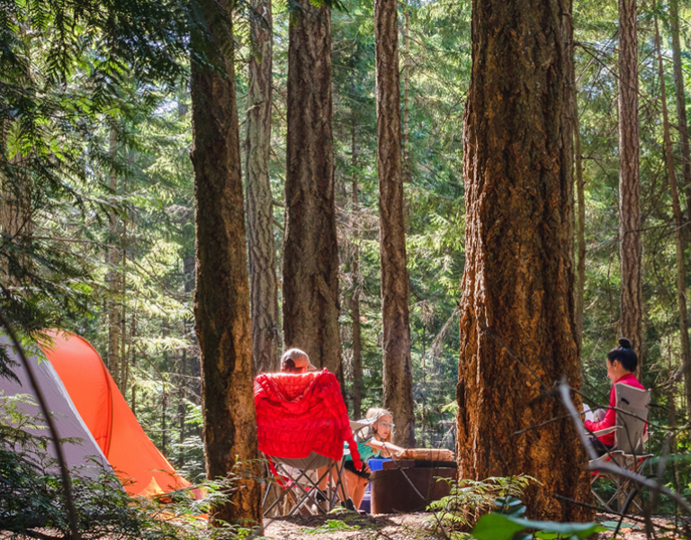
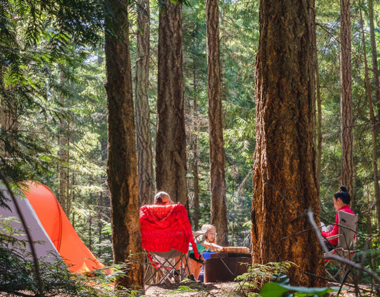

지방 기념물 제11호로 삼한 시대에 축조된 김제 벽골제, 밀양 수산제와 함께 우리 나라 최고의 저수지로 삼한시대 농업기술을 연구하는데 귀중한 자료가 되고 있다고 한다. 현재는 수리시설 보다는 유원지로서 그 명성을 더해가고 있는데 겨울철 및 해빙기에 잡히는 공어(빙어)는 담백한 맛의 회어로 각광받고 있는 명물이다.
* 오시는길 : 박달재 자연휴양림 → 제천방향 38번국도 → 박달재 터널 → 봉양읍 → 제천시내 → 의림지제천시 봉양읍과 백운면을 갈라놓은 험한 산을 박달재라 한다.
* 오시는길 : ① 영동고속도로 → 중앙고속도로 → 제천I.C → 충주방향 → 봉양 → 박달재
월악산은 네 개의 얼굴을 갖고 있다. 송계 쪽에서 보면 영봉, 중봉, 하봉으로 이어지는 암봉의 행진이 장엄하다. 맨 오른쪽 영봉은 특히 백여 미터는 족히 될 법한 깎아지른 벼랑을 그대로 드러내면서 중봉과 하봉, 두 형제를 아우른다. 특히 4월이면 한수면 민박마을에서 바라보는 영봉은 활짝 핀 벚꽃 가로수 위로 떠 있는 한 척의 거대한 범선으로 다가온다.

청풍호반은 충주 다목적댐 건설로 생성된 호수로 뱃길 130리중 볼거리가 가장 많고 풍경이 뛰어난 곳으로 내륙의 바다라고 합니다. 작은 민속촌 청풍문화재단지를 정점으로 해서 주위로 봉황이 호수위를 나르는 형상의 비봉산, 어머니 품속과 같이 편안하고 포근함을 느끼게 하는 금수산을 뒷 배경으로 한 청풍호반은 가히 절경이라 할 수 있다.

금수산 1,015.8m의 원래 이름은 백운산이었다. 그러나 조선 중기 단양 군수를 지낸 퇴계 이황 (1501∼1570)이 단풍 든 이 산의 모습을 보고 "비단에 수를 놓은 것처럼 아름답다"며 감탄, 산 이름을 금수산으로 바꾸었다고 한다. 금수산 남쪽 마을 이름이 백운동인 것도 옛 산 이름의 흔적이다. 금수산은 북쪽으로는 제천시내까지, 남쪽으로는 단양군 적성면 말목산(720m)까지 뻗어 내린 제법 긴 산줄기의 주봉이다.
제천시 덕산면 월악리에서 신륵사 쪽으로는 월악산 정산을 오르는 길이 있고, 억수리 쪽으로는 두 갈래 골짜기로 갈라져서 용하수 골짜기와 수문동 골짜기를 이루고 있는데 곳곳마다 16km의 계곡에는 원시림과 천하의 절경을 자랑하고 있다. 용하구곡의 제1경인 수문동 폭포의 장관부터 시작하여 병풍폭포, 수곡용담이 자연의 신비를 연출하고 8km물길의 비경인 관폭대, 청벽대, 선미대, 수룡담, 활래담, 강서대 등과 신륵사 위편의 수렴선대가 비경의 극치를 더하고 있다
제천시 한수면 송계리를 거쳐 충주시 상모면 미륵리까지 이어진 8㎞의 송계계곡은 수안보와 단양의 중간인 제천에 위치해 있으며 깊은 골짜기와 맑고 시원한 물, 월악산 등의 크고 작은 봉우리와 사찰, 절터 등 유물이 산재한 여름 피서지의 보고입니다. 송계계곡은 8개의 계곡으로 되어 있다.
옥순봉은 조선 초 청풍군(현 제천시 청풍면)에 속해 있었다. 단양 군수로 부임한 퇴계 이황 선생의 사랑을 한 몸에 받았던 단양 태생의 기녀 두향이 아름다운 옥순봉의 절경을 보고 단양군에 속하게 해달라고 청하였다. 그러나 청풍군수가 이를 허락지 않았다. 그러자 이황 선생이 단애를 이룬 석벽이 마치 대나무 순이 솟아 오른 것과 같다하여 옥순봉(玉筍峰)이라 이름 짓고, 석벽에 "단구동문"이라 새겨 단양의 관문이 되었다고 전한다.
조선 선조 19년(1568) 제주 수사로 있던 임응룡이 고향에 돌아올 때 해송 여덟 그루를 가져와 심고 이곳을 팔송이라 명명하였고, 그 뒤 정자를 짓고 팔송정이라 하였다. 허물어진 팔송정을 후손 윤근이 다시 세웠고 원규상이 탁사정이라 하였으며, 팔송은 모두 죽고 지금은 한 그루도 남아있지 않으나 1999년도 10월에 팔송마을 및 제방 둑에 20그루의 해송을 마을에서 심어 앞으로 해송을 구경할 수 있다.
배론 성지는 한국 천주교 전파의 진원지로 천주교사의 중요한 의미를 지니는 성지로 1801년 신유박해때 많은 천주교인이 배론 산골로 숨어들어 살았는데 그들은 옹기장사로 생계를 유지하였고 황사영이 당시의 박해상황과 천주교 신도의 구원을 요청하는 백서를 토굴 속에 숨어 집필한 지역이며 1855-1866년은 우리나라 최초의 근대식 교육기관인 성요셉신학교가 소재했던 지역이고, 우리나라 최초의 유학생중의 한명인 김대건 신부에 이어 두 번째 신부가 된 최양업의 분묘가 소재한 지역이다.
 
